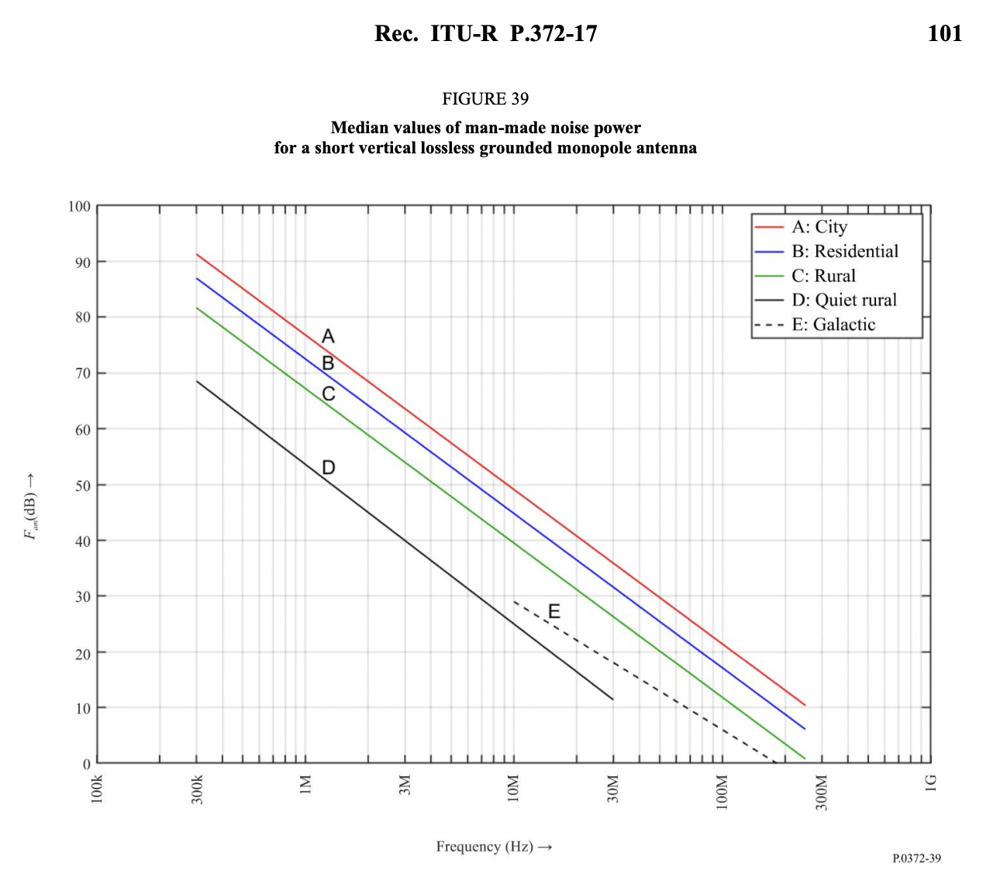

Important Definitions
Noise Floor
The noise floor is the level of background noise present in a system, often expressed in terms of power (e.g., dBm) or power density (e.g., dBm/Hz). It represents the minimum level of signal that can be detected above the inherent noise of the system. The noise floor is determined by a combination of thermal noise generated by electronics and external noise sources (antenna noise, environmental noise, etc.). Signals below the noise floor are typically indistinguishable from noise.
Antenna Factor
The antenna factor (AF) is the ratio of the electric field strength E (in volts per meter, or V/m) at the location of the antenna to the voltage V (in volts, or V) that the antenna delivers to its output terminals. It is typically expressed in dB/m and is given by:
\(Antenna\ Factor (AF) = \frac{E(V/m)}{V(V)}\)
Key points about antenna factors:
Frequency Dependence: Antenna factor varies with frequency. A calibration chart or data table usually accompanies a measurement antenna, providing the antenna factor at discrete frequencies.
Calibration: Accurate antenna-factor data comes from laboratory calibration placing the antenna in a known field and measuring the output voltage across a frequency range.
Application in EMC/EMI Testing: During radiated emissions testing, the measured voltage on a calibrated instrument indicates the field strength (in dBµV/m or V/m) by applying the appropriate antenna factor (and accounting for any cable loss or amplifier gain, if applicable).
Units: Antenna factors expressed in dB form can simplify calculations. For instance, an antenna factor expressed in dB(1/m) (decibels referenced to 1 per meter) relates field strength to voltage measurements in dBµV or dBm by simple decibel arithmetic.
Overall, the antenna factor quantifies the relation between “what the antenna is measuring” (a voltage) and “what we want to know” (the field strength in V/m or another appropriate unit).
Noise Factor
The noise factor (F) is a measure of the degradation of the signal-to-noise ratio (SNR) as a signal passes through a system such as an amplifier, antenna, or receiver. It is a dimensionless value (greater than 1) that quantifies how much noise the system itself adds. Mathematically, the noise factor is defined as:
\(F = \frac{SNR\ at\ the\ input}{SNR\ at\ the\ output}\)
The noise factor is often expressed in decibels (dB) as the noise figure (NF):
\(NF(dB) = 10 ⋅ log_{10}(F)\)
Noise Figure
The noise figure (NF) is a measure of how much noise a system adds to the input signal relative to an ideal noise-free system. It is the noise factor (dimensionless ratio) expressed in decibels (dB). Noise figure reveals the degradation in the signal-to-noise ratio (SNR) as the signal passes through a device like an amplifier, receiver, or any electronic system.
Key Points: A lower noise figure is better because it means the device adds less noise to the signal. The noise figure compares the system’s actual noise performance to an ideal noiseless system. Typical applications of noise figure are in radio receivers, antennas, and amplifiers, where reducing added noise improves the overall system’s ability to detect weak signals. Example: If an amplifier has a noise factor of F=2, the noise figure is:
\(NF (dB) = 10 ⋅ log_{10}(2) ≈ 3 dB\)
Dynamic Range
Dynamic range refers to the range of signal levels that a device (e.g., an SDR receiver) can process effectively, from the weakest detectable signal above the noise floor to the strongest signal without distortion or overload. It is typically expressed in decibels (dB) and is given by:
\(Dynamic\ Range (dB) = Maximum\ Input\ Power (dBm) − Noise\ Floor (dBm)\)
A higher dynamic range means the system can handle both very weak and very strong signals without issues. A low dynamic range may result in either weak signals being lost in noise or strong signals overloading the system.
ITU Noise
The International Telecommunication Union (ITU) specifies various noise sources across the radio frequency spectrum in its recommendations (e.g., ITU-R P.372). These noise ranges classify the power spectral density of noise in different frequency bands and from different sources, such as:
Atmospheric Noise: Noise from natural phenomena like lightning and other weather conditions. Man-Made Noise: Noise from human-made sources like industrial machines, power lines, and radios. Galactic Noise: Noise originating from space, particularly from stars and the Milky Way. Thermal Noise: Noise inherent to the system due to random motion of electrons, dependent on temperature. The ITU catalogues these noise levels in standardized tables to help engineers account for external noise contributions across specific operational frequencies.

The origin of the y-axis units corresponds to -174 dBm. So the mean noise power in a “quiet rural” area at 3 MHz converts to \(-174 + 40 = -134 dBm\), about the same as the noise power in a “city” at 20 MHz.